Справочник по системному программированию · модуль 2 · процессы
2.1
Список процессов
В главе ядро агента получает функцию core_list_procs: она отдаёт список всех процессов системы — номер, номер родителя и имя. Разобрано, как список берётся в Windows, macOS и Linux, как функция работает с массивом неизвестного заранее размера и как проверить её числами системной программы. В конце мозг агента находит цепочку своих родителей.
- Категория
- Процессы
- Уровень
- Начальный
- Что получится
agent/core/core_procs.c,list_procs.c, новыйbrain.py- Сколько занимает
- Пара 4, около сорока пяти минут за компьютером
§1Задача главы
В ЛР 4 вы смотрели дерево процессов в программе системы: у каждого процесса есть родитель, тот процесс, который его запустил. Агенту нужен тот же список в своём коде: с него начинаются проверки модуля 2. Агент ищет процесс, который загружает процессор, растёт в памяти или запущен не тем родителем. В главе ядро агента получает функцию core_list_procs, которая отдаёт список процессов системы, а мозг агента по этому списку находит цепочку своих родителей.
PID (process identifier) — номер процесса, который система выдаёт при запуске. Пока процесс работает, номер не меняется; после завершения номер может достаться новому процессу. PPID (parent PID) — номер родителя. Родитель записан в каждом процессе, а список детей — нет: детей находят, просматривая весь список.
В анкете сотрудника есть строка «руководитель: табельный номер такой-то». Чтобы нарисовать структуру отдела, берут все анкеты и раскладывают их по номерам руководителей. Анкеты руководителя для этого не нужны: в ней нет списка подчинённых.
Табельный номер уволенного не дают новому сотруднику. Номер завершённого процесса система может отдать новому, поэтому записанный родитель иногда оказывается чужим процессом.
Родители и дети: часть дерева с кадра macOS
pid 0
kernel_taskядро macOSpid 1
launchdзапускает программы входаСтрелка идёт от родителя к ребёнку, а в записи ребёнка хранится номер родителя — ppid. Список детей в записи процесса не хранится: чтобы найти детей, просматривают весь список и ищут свой номер в чужих ppid.
Зачем это нужно в работе
- Видеть, что запущено. Список процессов — основа диспетчера задач, антивируса и системы наблюдения. Каждая из них начинает со списка, а потом спрашивает о каждом процессе подробности.
- Находить, кто что запустил. Командная оболочка, которую запустил текстовый редактор или браузер, — частый признак заражения: человек запускает её из меню или из терминала. Такой вывод делают по цепочке родителей.
- Работать с буфером неизвестного размера. Число процессов заранее неизвестно. Договор «дай место — получи число, сколько нужно» встречается в WinAPI и POSIX постоянно.
Глава продолжает репозиторий sysprog-start после задания модуля 1: в agent/core лежат core.h с полем uptime_s и core_info.c, в agent/brain — brain.py. Команды выполняются во встроенном терминале VS Code. VS Code запускается из окна x64 Native Tools Command Prompt for VS 2022, как в главе 1.2. Тогда в его терминале доступен cl, а Python — 64-битный для x64.Команды выполняются во встроенном терминале VS Code, начиная с корня репозитория.
Структура core_info в этой главе — 280 байт, с полем uptime_s из задания. Если задание не сделано, начните с него: задание модуля 1, в его начале есть код глав 1.1–1.3 для своей системы. Новые файлы этой главы от uptime_s не зависят, их можно делать и с ядром из главы 1.2, если убрать uptime_s из core.h и brain.py.
Ядро отдаёт список массивом структур, поэтому первая часть начинается с описания одной строки списка в core.h.
§2Шаг 1. Описать процесс в core.h
Одна строка списка — три поля: номер процесса, номер родителя и имя. Номера хранятся в int64_t. В Windows номер процесса — 32-битное DWORD, в macOS и Linux — pid_t (тоже 32 бита). Поле на 8 байт вмещает номер любой из трёх систем, и между полями не появляются пропуски для выравнивания. Имя — массив из 64 байт в UTF-8. В core.h добавляются размер имени, структура и объявление функции:
struct core_info { … int64_t uptime_s; }; CORE_API int core_get_info(struct core_info *out);
#define CORE_NAME_MAX 64 … struct core_info { … int64_t uptime_s; }; struct core_proc { int64_t pid; int64_t ppid; char name[CORE_NAME_MAX]; }; CORE_API int core_get_info(struct core_info *out); CORE_API int core_list_procs(struct core_proc *out, int32_t max, int32_t *count);
Строка #define CORE_NAME_MAX 64 ставится рядом с CORE_HOST_MAX. Поля идут подряд без пропусков, размер структуры — 8 + 8 + 64 = 80 байт:
Функция принимает три параметра:
out— адрес массива, куда ядро пишет строки списка;max— сколько мест в массиве: ядро не пишет за его конец;count— адрес числа, куда ядро запишет, сколько процессов нашло. Если мест не хватило, это число говорит, сколько их нужно.
Секретарю дают бланк на 10 строк и просят переписать всех посетителей за день. Посетителей было 14: секретарь заполняет 10 строк, а внизу пишет «всего 14, нужен бланк побольше».
Секретарь может дописать строку на полях. Функция на C за край массива писать не должна: там чужая память.
Договор функции: места, ответ, код
вызывающий
out[max]массив на max мест по 80 байтядро
core_list_procsпишет не больше max строкответ
countсколько процессов найдено| Случай | В out | Код |
|---|---|---|
| мест хватило | весь список | 0 |
| max = 10 | 10 строк | 12234 |
| ошибка в параметрах | ничего | 8722 |
Число процессов заранее неизвестно. Поэтому функция сообщает, сколько мест нужно, и вызывающий повторяет вызов с бо́льшим массивом.
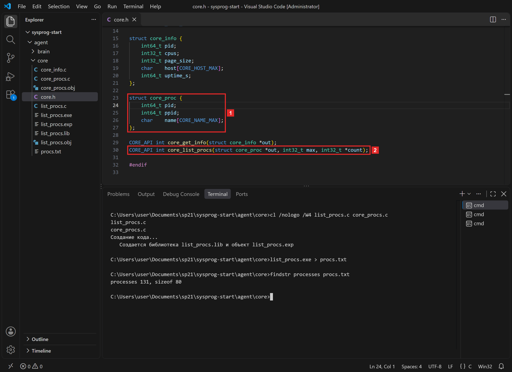
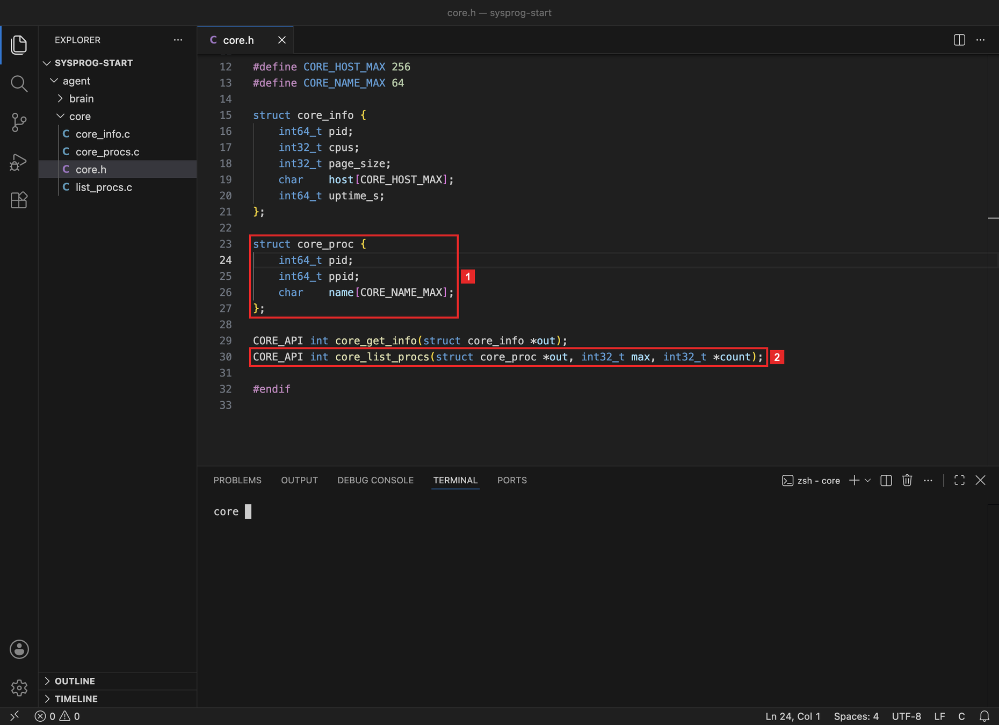
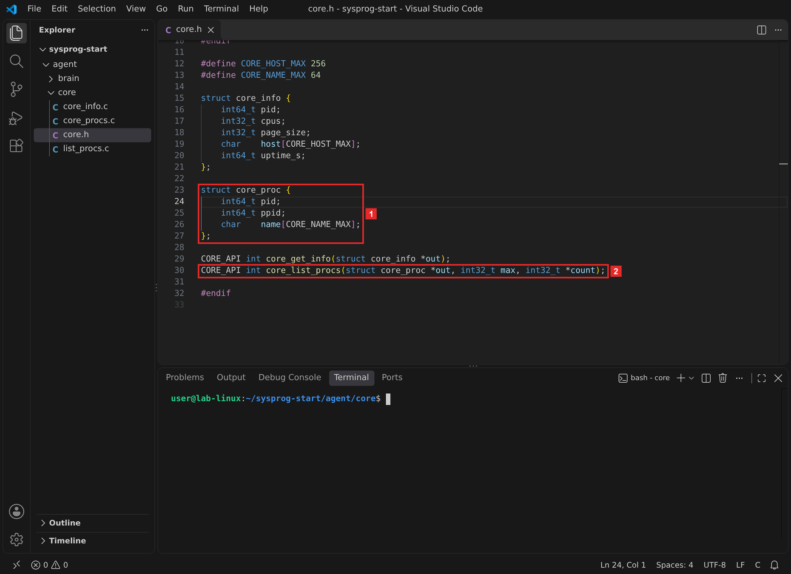
Что получилось.В core.h описана строка списка на 80 байт и договор функции. Теперь её нужно написать для своей системы.
§3Шаг 2. Написать core_procs.c
Функция списка — в новом файле agent/core/core_procs.c: у каждой части ядра свой файл, и core_info.c не меняется. Каждая система отдаёт список своим способом:
Откуда ядро берёт список
Windows
macOS
Linux
Три системы отдают список по-разному, а наружу функция ядра отдаёт одно и то же: массив struct core_proc и count.
#include <windows.h> #include <tlhelp32.h> #include "core.h" int core_list_procs(struct core_proc *out, int32_t max, int32_t *count) { PROCESSENTRY32W pe; int32_t found = 0; if (count == NULL || max < 0 || (out == NULL && max > 0)) return ERROR_INVALID_PARAMETER; HANDLE snap = CreateToolhelp32Snapshot(TH32CS_SNAPPROCESS, 0); if (snap == INVALID_HANDLE_VALUE) return (int)GetLastError(); pe.dwSize = sizeof pe; if (!Process32FirstW(snap, &pe)) { DWORD err = GetLastError(); CloseHandle(snap); return (int)err; } do { if (found < max) { out[found].pid = pe.th32ProcessID; out[found].ppid = pe.th32ParentProcessID; if (WideCharToMultiByte(CP_UTF8, 0, pe.szExeFile, -1, out[found].name, sizeof out[found].name, NULL, NULL) == 0) out[found].name[sizeof out[found].name - 1] = '\0'; } found++; } while (Process32NextW(snap, &pe)); CloseHandle(snap); *count = found; return found > max ? ERROR_INSUFFICIENT_BUFFER : 0; }
#include <errno.h> #include <libproc.h> #include <stdio.h> #include "core.h" int core_list_procs(struct core_proc *out, int32_t max, int32_t *count) { static pid_t pids[8192]; struct proc_bsdshortinfo si; int32_t found = 0; if (count == NULL || max < 0 || (out == NULL && max > 0)) return EINVAL; int n = proc_listallpids(pids, sizeof pids); if (n < 0) return errno; for (int i = 0; i < n; i++) { if (proc_pidinfo(pids[i], PROC_PIDT_SHORTBSDINFO, 0, &si, sizeof si) != sizeof si) continue; if (found < max) { out[found].pid = pids[i]; out[found].ppid = si.pbsi_ppid; snprintf(out[found].name, sizeof out[found].name, "%s", si.pbsi_comm); } found++; } *count = found; return found > max ? ERANGE : 0; }
#include <ctype.h> #include <dirent.h> #include <errno.h> #include <stdio.h> #include <string.h> #include "core.h" static int read_stat(const char *pid, struct core_proc *p) { char path[64], line[512]; snprintf(path, sizeof path, "/proc/%s/stat", pid); FILE *f = fopen(path, "r"); if (f == NULL) return -1; size_t len = fread(line, 1, sizeof line - 1, f); fclose(f); line[len] = '\0'; char *open = strchr(line, '('); char *close = strrchr(line, ')'); if (open == NULL || close == NULL) return -1; long long pid_num = 0, ppid = 0; if (sscanf(line, "%lld", &pid_num) != 1 || sscanf(close + 2, "%*c %lld", &ppid) != 1) return -1; p->pid = pid_num; p->ppid = ppid; snprintf(p->name, sizeof p->name, "%.*s", (int)(close - open - 1), open + 1); return 0; } int core_list_procs(struct core_proc *out, int32_t max, int32_t *count) { struct core_proc p; struct dirent *e; int32_t found = 0; if (count == NULL || max < 0 || (out == NULL && max > 0)) return EINVAL; DIR *d = opendir("/proc"); if (d == NULL) return errno; while ((e = readdir(d)) != NULL) { if (!isdigit((unsigned char)e->d_name[0])) continue; if (read_stat(e->d_name, &p) != 0) continue; if (found < max) out[found] = p; found++; } closedir(d); *count = found; return found > max ? ERANGE : 0; }
Разбор core_procs.c по шагамWindows
Зачем эта программа. Заполнить массив out строками «номер процесса, номер родителя, имя» для всех процессов системы. Список берётся из снимка, который делает Windows: функция проходит его от первой записи до последней.
#include <windows.h> #include <tlhelp32.h> #include "core.h" int core_list_procs(struct core_proc *out, int32_t max, int32_t *count) { PROCESSENTRY32W pe; int32_t found = 0; if (count == NULL || max < 0 || (out == NULL && max > 0)) return ERROR_INVALID_PARAMETER; HANDLE snap = CreateToolhelp32Snapshot(TH32CS_SNAPPROCESS, 0); if (snap == INVALID_HANDLE_VALUE) return (int)GetLastError(); pe.dwSize = sizeof pe; if (!Process32FirstW(snap, &pe)) { DWORD err = GetLastError(); CloseHandle(snap); return (int)err; } do { if (found < max) { out[found].pid = pe.th32ProcessID; out[found].ppid = pe.th32ParentProcessID; if (WideCharToMultiByte(CP_UTF8, 0, pe.szExeFile, -1, out[found].name, sizeof out[found].name, NULL, NULL) == 0) out[found].name[sizeof out[found].name - 1] = '\0'; } found++; } while (Process32NextW(snap, &pe)); CloseHandle(snap); *count = found; return found > max ? ERROR_INSUFFICIENT_BUFFER : 0; }
- Подключить заголовочные файлы
windows.h— основные функции и типы WinAPI;tlhelp32.h— функции снимка процессов (Tool Help), их нет вwindows.h;core.h—struct core_procи объявление функции ядра.
- Начать функцию
PROCESSENTRY32W pe— одна запись снимка: номер процесса, номер родителя, имя файла и ещё несколько полей. БукваWв конце означает, что имя хранится в UTF-16.found— сколько процессов найдено, считается и тогда, когда место вoutкончилось. - Проверить параметры
Без адреса для
countфункции некуда вернуть число процессов. Отрицательноеmaxне имеет смысла. Пустойoutдопустим только приmax= 0: так можно спросить «сколько процессов?», ничего не получая. В остальных случаях — код 87,ERROR_INVALID_PARAMETER, как в главе 1.1. - Сделать снимок
CreateToolhelp32Snapshot(TH32CS_SNAPPROCESS, 0)просит Windows записать список процессов на этот момент. Ответ —HANDLE, номер объекта ядра, через который читают снимок. Второй параметр, 0, для списка процессов не используется.ядро Windows
процессы сейчассписок меняется каждую секундуснимокобъект ядра
snapсписок на один момент, больше не меняетсяФотография очереди: люди в очереди приходят и уходят, а на фотографии их можно спокойно пересчитать.
- Прочитать первую запись
Перед первым вызовом в
pe.dwSizeзаписывают размер структуры: по нему Windows определяет версию структуры записи.Process32FirstWкопирует первую запись снимка вpe. Если она не прочиталась, функция берёт код ошибки, закрывает снимок и возвращает код. - Пройти снимок
Цикл
do … whileсначала выполняет тело, потом проверяет условие: первая запись уже прочитана и должна попасть в список.Process32NextWберёт следующую запись и возвращаетFALSE, когда записи кончились.th32ProcessID— номер процесса,th32ParentProcessID— номер родителя;WideCharToMultiByte(CP_UTF8, …)переводит имя из UTF-16 в UTF-8, как имя компьютера в главе 1.1. Если имя не помещается в 64 байта, функция возвращает 0, и последний байт делается нулём;found++стоит внеif: процессы считаются до конца, даже когда место кончилось.
- Закрыть снимок и вернуть ответ
CloseHandleосвобождает объект снимка. В*countзаписывается, сколько процессов найдено. Если их больше, чем мест, функция возвращает 122,ERROR_INSUFFICIENT_BUFFER: первыеmaxстрок заполнены, аcountговорит, сколько мест нужно.
Разбор core_procs.c по шагамmacOS
Зачем эта программа. Заполнить массив out строками «номер процесса, номер родителя, имя» для всех процессов системы. Сначала функция получает от ядра macOS номера всех процессов, потом про каждый номер спрашивает родителя и имя.
#include <errno.h> #include <libproc.h> #include <stdio.h> #include "core.h" int core_list_procs(struct core_proc *out, int32_t max, int32_t *count) { static pid_t pids[8192]; struct proc_bsdshortinfo si; int32_t found = 0; if (count == NULL || max < 0 || (out == NULL && max > 0)) return EINVAL; int n = proc_listallpids(pids, sizeof pids); if (n < 0) return errno; for (int i = 0; i < n; i++) { if (proc_pidinfo(pids[i], PROC_PIDT_SHORTBSDINFO, 0, &si, sizeof si) != sizeof si) continue; if (found < max) { out[found].pid = pids[i]; out[found].ppid = si.pbsi_ppid; snprintf(out[found].name, sizeof out[found].name, "%s", si.pbsi_comm); } found++; } *count = found; return found > max ? ERANGE : 0; }
- Подключить заголовочные файлы
errno.h— коды ошибокEINVAL,ERANGE;libproc.h— функцииproc_listallpidsиproc_pidinfo— сведения о процессах от ядра macOS;stdio.h—snprintf;core.h— структура и объявление.
- Подготовить место
static pid_t pids[8192]— массив для номеров процессов, 32 КБ. Словоstaticкладёт его в память программы, где он хранится всё время работы; стопка вызовов для такого массива мала.struct proc_bsdshortinfo si— краткие сведения об одном процессе.found— счётчик найденных. - Проверить параметры
Те же проверки, что в других системах. Неверный параметр — код 22,
EINVAL, как в главе 1.2. - Получить номера всех процессов
proc_listallpids(pids, sizeof pids)записывает в массив номера всех процессов и возвращает, сколько записал. Второй параметр — размер массива в байтах: 8192 места по 4 байта, 32 768. При ошибке функция возвращает −1, а код ошибки лежит вerrno. - Спросить про каждый процесс
proc_pidinfo(номер, PROC_PIDT_SHORTBSDINFO, 0, &si, sizeof si)заполняетsiкраткими сведениями о процессе и возвращает число записанных байт. Если байт меньше, чем размер структуры, процесс пропускается: он мог завершиться между двумя вызовами.шаг 13
pids[]только номера: 0, 1, 4503, …номершаг 18
sipbsi_ppid, pbsi_commкопияout[found]
pid, ppid, имя80 байт - Записать строку списка
Номер берётся из
pids[i], родитель — изsi.pbsi_ppid. Имяsi.pbsi_comm— массив из 16 байт (MAXCOMLEN), поэтому имя длиннее 15 символов приходит обрезанным.snprintf(out, размер, "%s", имя)копирует строку. Нулевой байт в конце она ставит всегда.found++стоит внеif: процессы считаются до конца. - Вернуть ответ
В
*count— сколько процессов найдено. Если мест меньше, функция возвращает 34,ERANGE(«результат не помещается»): первыеmaxстрок заполнены.
Разбор core_procs.c по шагамLinux
Зачем эта программа. Заполнить массив out строками «номер процесса, номер родителя, имя» для всех процессов системы. В Linux у каждого процесса есть папка /proc/номер, а в ней файл stat со сведениями о процессе. Функция читает папку /proc и файл stat каждого процесса.
#include <ctype.h> #include <dirent.h> #include <errno.h> #include <stdio.h> #include <string.h> #include "core.h" static int read_stat(const char *pid, struct core_proc *p) { char path[64], line[512]; snprintf(path, sizeof path, "/proc/%s/stat", pid); FILE *f = fopen(path, "r"); if (f == NULL) return -1; size_t len = fread(line, 1, sizeof line - 1, f); fclose(f); line[len] = '\0'; char *open = strchr(line, '('); char *close = strrchr(line, ')'); if (open == NULL || close == NULL) return -1; long long pid_num = 0, ppid = 0; if (sscanf(line, "%lld", &pid_num) != 1 || sscanf(close + 2, "%*c %lld", &ppid) != 1) return -1; p->pid = pid_num; p->ppid = ppid; snprintf(p->name, sizeof p->name, "%.*s", (int)(close - open - 1), open + 1); return 0; } int core_list_procs(struct core_proc *out, int32_t max, int32_t *count) { struct core_proc p; struct dirent *e; int32_t found = 0; if (count == NULL || max < 0 || (out == NULL && max > 0)) return EINVAL; DIR *d = opendir("/proc"); if (d == NULL) return errno; while ((e = readdir(d)) != NULL) { if (!isdigit((unsigned char)e->d_name[0])) continue; if (read_stat(e->d_name, &p) != 0) continue; if (found < max) out[found] = p; found++; } closedir(d); *count = found; return found > max ? ERANGE : 0; }
- Подключить заголовочные файлы
ctype.h—isdigit, проверка «это цифра»;dirent.h— чтение папки:opendir,readdir,closedir;errno.h,stdio.h,string.h— коды ошибок, файлы иsnprintf, поиск символа в строке.
- Прочитать файл stat
Вспомогательная функция
read_statобъявленаstatic: она видна только внутри этого файла и не попадает в таблицу экспорта библиотеки.snprintf(path, …, "/proc/%s/stat", pid)собирает путь, например/proc/305/stat;fopenоткрывает файл; если процесс уже завершился, файла нет, и функция возвращает −1;freadчитает до 511 байт,line[len] = '\0'превращает их в строку C.
Начало файла для процесса из кадра:
305pid(list_procs)имя в скобкахRсостояние229ppid…ещё 48 полей - Найти скобки вокруг имени
Имя процесса стоит в скобках и может содержать пробелы и скобки, например
(Web Content). Поэтому открывающую скобку ищут с начала строки функциейstrchr, а закрывающую — с конца функциейstrrchr. Всё между ними — имя.Адрес на конверте читают от индекса до конца строки: где бы внутри ни стояла запятая, она часть адреса.
- Разобрать числа
sscanf(line, "%lld", &pid_num)читает первое число — номер процесса.close + 2— адрес сразу после «)». С него"%*c %lld"пропускает букву состояния (*— прочитать и не сохранять) и читает номер родителя. Имя копируется форматом"%.*s":*берёт длину из параметра — число символов между скобками. - Открыть папку /proc
После тех же проверок параметров
opendir("/proc")открывает папку. Это не папка на диске: её содержимое ядро Linux составляет в момент чтения. - Пройти все записи папки
readdirвозвращает следующую запись папки илиNULL, когда записи кончились. В/procесть и другие файлы, напримерcpuinfo, поэтому записи, которые начинаются не с цифры, пропускаются. Еслиstatне прочитался, процесс тоже пропускается.out[found] = pкопирует все 80 байт структуры одной строкой. - Закрыть папку и вернуть ответ
closedirосвобождает папку. Дальше — как в других системах:*countи код 34,ERANGE, если мест меньше, чем процессов.
Во всех трёх файлах одинаковы проверка параметров, счётчик found вне условия и ответ в конце: так в коде выполняется договор из шага 1. Различается только то, как система отдаёт сведения о процессах.
Что получилось.Функция core_list_procs написана для своей системы. Проверим её программой на C, прежде чем вызывать из Python.
§4Шаг 3. Проверить ядро программой на C
Программа проверки agent/core/list_procs.c одна для трёх систем: она вызывает функцию ядра и печатает список.
#include <inttypes.h> #include <stdio.h> #include <stdlib.h> #include "core.h" #define MAX 4096 int main(int argc, char *argv[]) { static struct core_proc procs[MAX]; int32_t max = argc > 1 ? atoi(argv[1]) : MAX; int32_t count = 0; if (max < 0 || max > MAX) max = MAX; int err = core_list_procs(procs, max, &count); if (err != 0) { printf("core_list_procs: error %d, need %d places, have %d\n", err, (int)count, (int)max); return 1; } for (int32_t i = 0; i < count; i++) printf("%7" PRId64 " %7" PRId64 " %s\n", procs[i].pid, procs[i].ppid, procs[i].name); printf("processes %d, sizeof %zu\n", (int)count, sizeof procs[0]); return 0; }
Разбор list_procs.c по шагамвсе системы
Зачем эта программа. Вызвать core_list_procs из программы на C и напечатать список: так ядро проверяют до того, как его вызывает Python. Необязательный параметр командной строки задаёт число мест — с ним проверяется ответ «мест не хватило».
#include <inttypes.h> #include <stdio.h> #include <stdlib.h> #include "core.h" #define MAX 4096 int main(int argc, char *argv[]) { static struct core_proc procs[MAX]; int32_t max = argc > 1 ? atoi(argv[1]) : MAX; int32_t count = 0; if (max < 0 || max > MAX) max = MAX; int err = core_list_procs(procs, max, &count); if (err != 0) { printf("core_list_procs: error %d, need %d places, have %d\n", err, (int)count, (int)max); return 1; } for (int32_t i = 0; i < count; i++) printf("%7" PRId64 " %7" PRId64 " %s\n", procs[i].pid, procs[i].ppid, procs[i].name); printf("processes %d, sizeof %zu\n", (int)count, sizeof procs[0]); return 0; }
- Подключить заголовочные файлы
inttypes.hдаёт форматы печати для типов точного размера:PRId64— формат дляint64_t, на каждой системе свой (lldилиld).stdlib.h—atoi, перевод строки в число. - Подготовить массив
static struct core_proc procs[4096]— 4096 мест по 80 байт, 320 КБ. Такой массив не помещают в стопку вызовов: её размер ограничен, в Windows по умолчанию 1 МБ на поток. Словоstaticкладёт массив в память программы.argc > 1 ? atoi(argv[1]) : MAX— если в командной строке есть параметр, число мест берётся из него, иначе 4096. Как устроеныargcиargv, вы видели в ЛР 3. - Вызвать функцию ядра
Число мест ограничивается размером массива, чтобы ядро не писало за его конец. В функцию уходят адрес массива, число мест и адрес
count. - Сообщить об ошибке
Если код не 0, программа печатает код, сколько мест нужно и сколько было, и завершается с кодом 1.
- Напечатать список
Каждая строка — номер процесса и номер родителя шириной 7 символов и имя.
"%7" PRId64— две строки подряд, компилятор склеивает их в одну:"%7lld"или"%7ld". Последняя строка — число процессов и размер одной записи.
Собираем программу из двух файлов и пишем список в файл procs.txt: в терминале сотни строк не уместятся. Последняя строка файла — итог:
cd agent\core cl /nologo /W4 list_procs.c core_procs.c list_procs.exe > procs.txt findstr processes procs.txt
cd agent/core clang -Wall -Wextra -o list_procs list_procs.c core_procs.c ./list_procs > procs.txt tail -1 procs.txt
cd agent/core gcc -Wall -Wextra -o list_procs list_procs.c core_procs.c ./list_procs > procs.txt tail -1 procs.txt
Знак > направляет вывод программы в файл вместо терминала. Открываем procs.txt в VS Code.
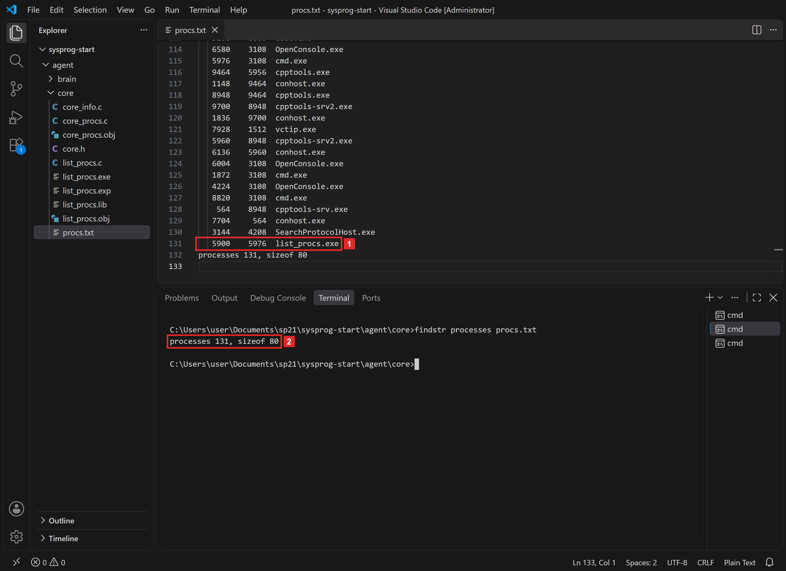
list_procs.exe, номер 5900, родитель 5976 — cmd.exe терминала. 2 Итог: 131 процесс, запись — 80 байт.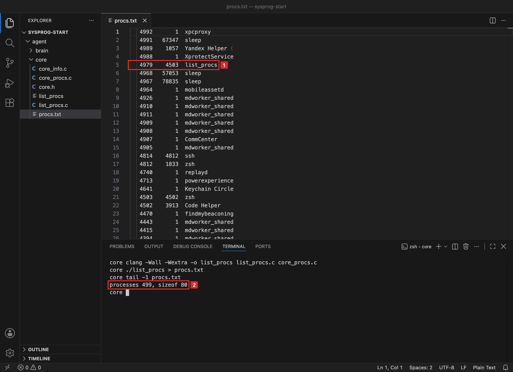
zsh терминала. 2 Итог: 499 процессов, запись — 80 байт.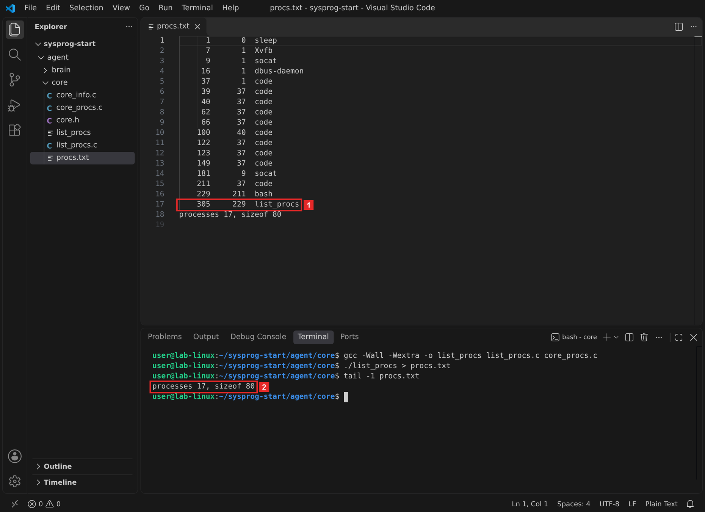
bash терминала. 2 Итог: 17 процессов, запись — 80 байт.Программа нашла в списке сама себя 1: в момент вызова она тоже процесс. Её родитель — оболочка терминала, из которой её запустили. Размер записи 2 совпал с раскладкой шага 1.
Имена в Windows — полные имена файлов с .exe. Первые две строки файла — особые процессы с номерами 0 и 4: [System Process] (бездействие системы) и System (потоки ядра).
Имена в macOS обрезаны до 15 символов: в строке 3 имя Yandex Helper ( оборвано на скобке, а mdworker_shared — ровно 15. Так хранит имя ядро macOS (MAXCOMLEN = 16 байт с нулём). Процесс 0 — kernel_task, само ядро, процесс 1 — launchd.
Кадр снят в контейнере Docker: в нём видны только его 17 процессов, а процесс 1 — sleep, команда запуска контейнера. На обычном Linux процесс 1 — systemd, процессов сотни. Имена обрезаны до 15 символов: так хранит имя ядро Linux (TASK_COMM_LEN = 16 байт с нулём).
Что получилось.Ядро отдаёт список, и в нём есть сама программа с верным родителем. Осталось сверить число процессов с программой системы.
§5Шаг 4. Сверить с программой системы
Двое по очереди пересчитывают людей в зале, где идёт перерыв. Счёт расходится на несколько человек: кто-то вышел, кто-то вошёл, а каждый счётчик сам стоит в зале.
Людей в зале можно попросить замереть. Процессы во время подсчёта продолжают запускаться и завершаться.
Ядро должно находить столько же процессов, сколько находит системная программа. В ЛР 4 это была программа с окном, здесь удобнее командная: tasklistps. Печатаем итог ядра и число строк вывода системной программы:
findstr processes procs.txt
for /f %n in ('tasklist /NH ^| find /c /v ""') do @echo tasklist: %n
tail -1 procs.txt echo "ps: $(ps -A -o pid= | wc -l)"
tail -1 procs.txt echo "ps: $(ps -A -o pid= | wc -l)"
tasklist /NH печатает процессы без заголовка, find /c /v "" считает строки. for /f … do @echo берёт число из вывода и печатает его с подписью.
ps -A печатает все процессы, -o pid= оставляет в строке только номер без заголовка, wc -l считает строки. $(…) подставляет вывод команды в текст echo.
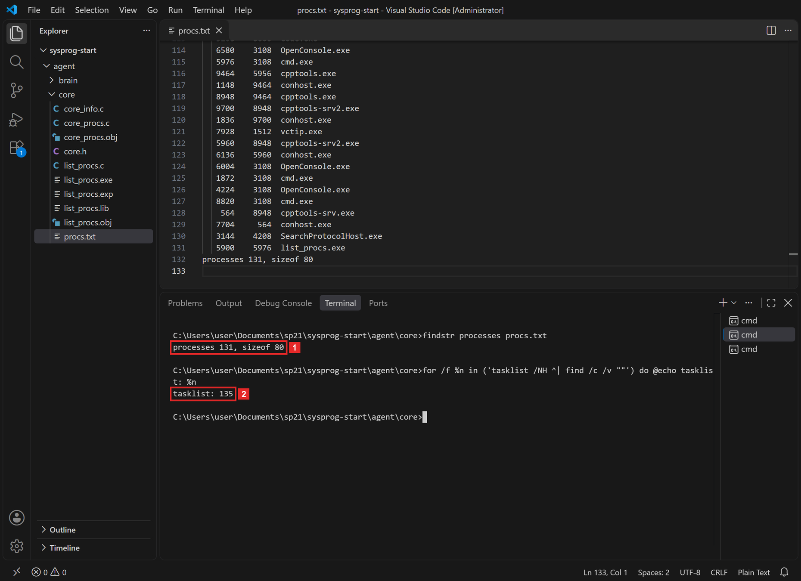
tasklist: 135.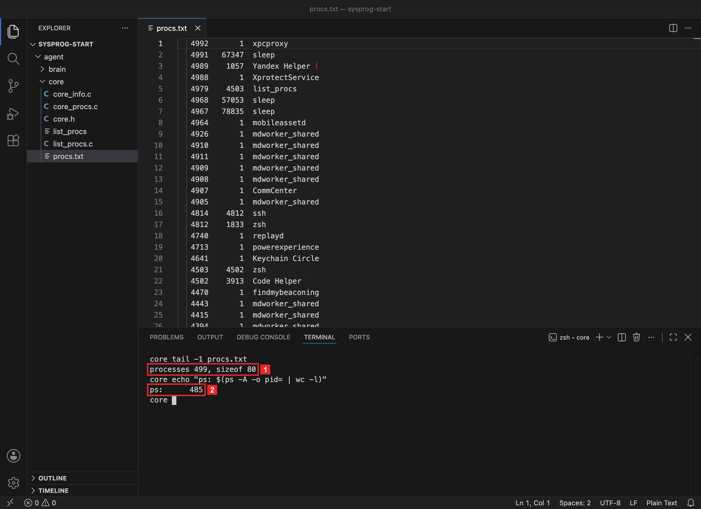
ps: 485.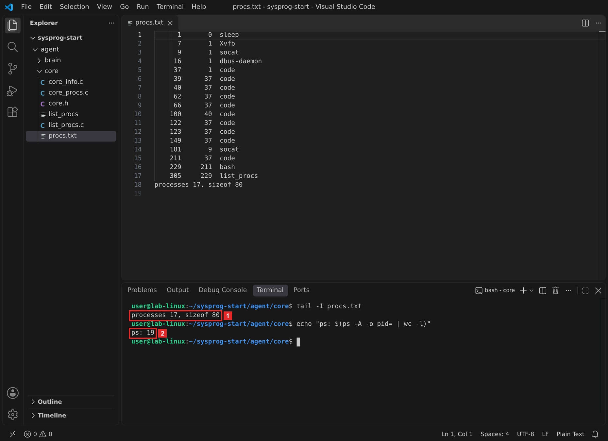
ps: 19.Числа близки, но не равны. Две программы считают процессы в разные моменты, и каждая попадает в свой счёт вместе со своей командой.
Список ядра снят в шаге 3, а tasklist запущен позже. Кроме того, в момент подсчёта работают tasklist.exe, find.exe и отдельный cmd.exe, который запускает for /f: их нет в procs.txt. Отсюда разница в 4 процесса.
Список ядра снят в шаге 3, а ps запущен позже. В macOS за это время число процессов меняется заметно: короткие процессы вроде mdworker_shared и sleep постоянно появляются и завершаются. При проверке на том же Mac счёт ps раз в секунду за 12 секунд вырос с 548 до 568. Если запустить ./list_procs | tail -1 и ps сразу друг за другом, числа совпадают с точностью до самих программ. Ядро находит list_procs и процесс 0, а ps — себя.
В момент подсчёта работают ps, wc и копия оболочки, которую создаёт $(…), а list_procs уже завершился: три процесса вместо одного, разница — 2.
Точного совпадения в работающей системе не бывает, поэтому числа сравнивают с допуском. Надёжнее искать в списке ядра процессы, которые точно работают: оболочку терминала и саму программу.
Что получилось.Ядро находит те же процессы, что системная программа. Последняя проверка ядра — ответ, когда мест мало.
§6Шаг 5. Дать ядру мало места
Параметр командной строки задаёт 10 мест вместо 4096. Процессов больше, и ядро должно ответить кодом «мест не хватило» и числом, сколько мест нужно:
list_procs.exe 10 echo %errorlevel%
./list_procs 10 echo $?
./list_procs 10 echo $?
%errorlevel%$? — код завершения последней программы.
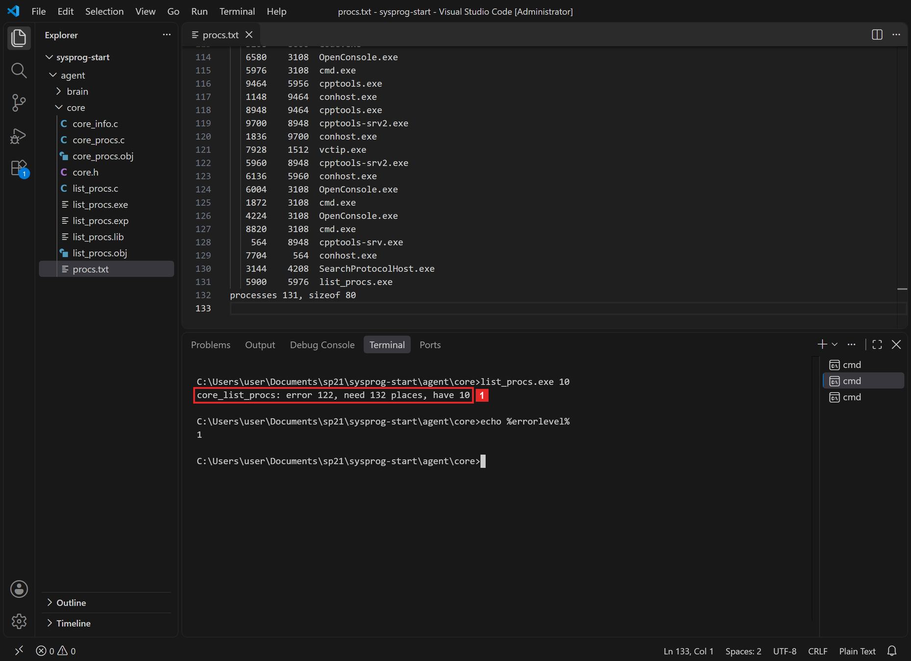
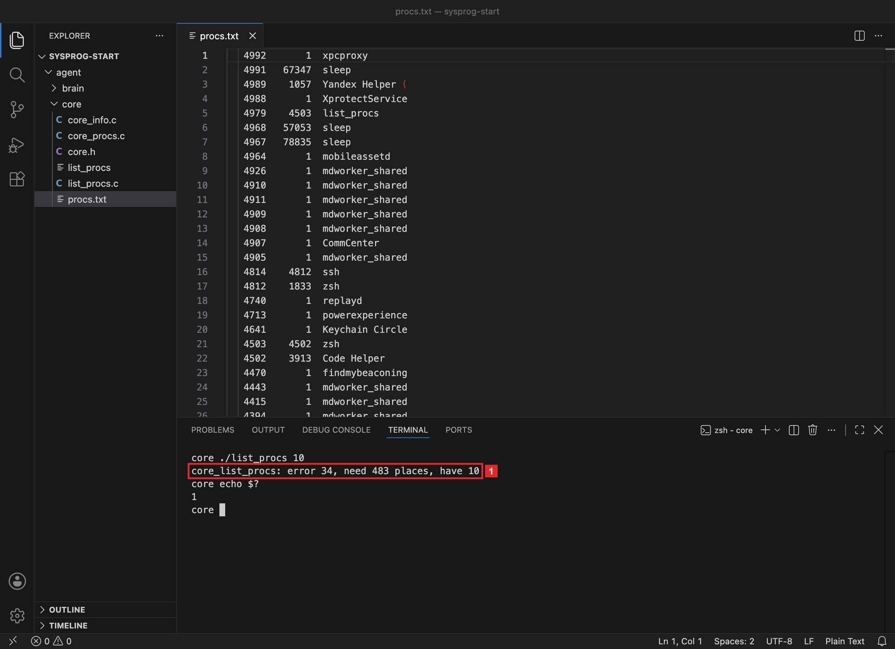
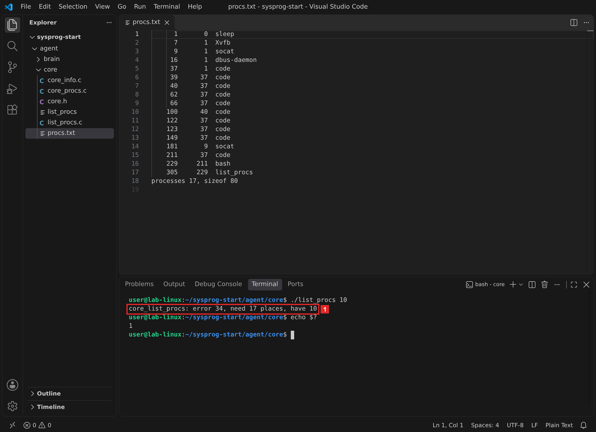
Код 122 — ERROR_INSUFFICIENT_BUFFER, «область данных, переданная системному вызову, слишком мала». Этим кодом многие функции WinAPI сообщают, что переданный им буфер мал.
Код 34 — ERANGE, «Result too large»: результат не помещается в отведённое место. Его же возвращает, например, getcwd, когда путь длиннее буфера.
Число нужных мест — то, ради чего функция считает процессы до конца. Без него вызывающему пришлось бы угадывать размер и повторять вызов вслепую. Программа на C на этом завершается кодом 1, а мозг агента повторит вызов с нужным местом.
Что получилось.Ядро соблюдает договор: при нехватке места оно не выходит за массив и сообщает, сколько мест нужно. Можно подключать функцию к мозгу.
§7Шаг 6. Вызвать список из Python
Библиотека ядра теперь собирается из двух файлов: core_info.c и core_procs.c. Программа list_procs.c в библиотеку не входит: в ней main.
cl /nologo /W4 /LD core_info.c core_procs.c /Fe:sentry_core.dll
clang -Wall -Wextra -shared -fPIC -o libsentry_core.dylib core_info.c core_procs.c
gcc -Wall -Wextra -shared -fPIC -o libsentry_core.so core_info.c core_procs.c
В brain.py добавляются класс CoreProc, типы новой функции и две функции Python. Класс ставится после CoreInfo, типы — после типов core_get_info, функции — после get_info. Кроме того, в начало файла добавляется import errno, а функция error_text из задания модуля 1 остаётся как была:
class CoreProc(ctypes.Structure): _fields_ = [ ("pid", ctypes.c_int64), ("ppid", ctypes.c_int64), ("name", ctypes.c_char * 64), ] core.core_list_procs.argtypes = [ctypes.POINTER(CoreProc), ctypes.c_int32, ctypes.POINTER(ctypes.c_int32)] core.core_list_procs.restype = ctypes.c_int TOO_SMALL = 122 if sys.platform == "win32" else errno.ERANGE def list_procs(room=256): while True: buf = (CoreProc * room)() count = ctypes.c_int32() err = core.core_list_procs(buf, room, ctypes.byref(count)) if err == 0: return [{"pid": p.pid, "ppid": p.ppid, "name": p.name.decode("utf-8", "replace")} for p in buf[:count.value]] if err != TOO_SMALL: raise OSError(err, error_text(err)) room = count.value + 64 def parents(procs, pid): by_pid = {p["pid"]: p for p in procs} chain = [] while pid in by_pid and len(chain) < 64: p = by_pid[pid] chain.append(p) if p["ppid"] == pid: break pid = p["ppid"] return chain
Разбор brain.py · новые части по шагамвсе системы
Зачем эта программа. Получить список процессов из ядра, сколько бы их ни было, и найти цепочку родителей процесса. Цепочка — первое, что агент сообщает о себе: кто его запустил.
class CoreProc(ctypes.Structure): _fields_ = [ ("pid", ctypes.c_int64), ("ppid", ctypes.c_int64), ("name", ctypes.c_char * 64), ] core.core_list_procs.argtypes = [ctypes.POINTER(CoreProc), ctypes.c_int32, ctypes.POINTER(ctypes.c_int32)] core.core_list_procs.restype = ctypes.c_int TOO_SMALL = 122 if sys.platform == "win32" else errno.ERANGE def list_procs(room=256): while True: buf = (CoreProc * room)() count = ctypes.c_int32() err = core.core_list_procs(buf, room, ctypes.byref(count)) if err == 0: return [{"pid": p.pid, "ppid": p.ppid, "name": p.name.decode("utf-8", "replace")} for p in buf[:count.value]] if err != TOO_SMALL: raise OSError(err, error_text(err)) room = count.value + 64 def parents(procs, pid): by_pid = {p["pid"]: p for p in procs} chain = [] while pid in by_pid and len(chain) < 64: p = by_pid[pid] chain.append(p) if p["ppid"] == pid: break pid = p["ppid"] return chain
- Описать структуру процесса
Класс
CoreProcповторяетstruct core_procизcore.h: два поля по 8 байт и массив из 64 байт. По нему ctypes посчитает размер 80. - Задать типы функции
Три параметра — указатель на массив структур, число мест
c_int32и указатель наc_int32.TOO_SMALL— код «мест не хватило»: 122 в Windows,errno.ERANGE(34) в macOS и Linux. - Вызвать ядро
CoreProc * room— тип «массив изroomструктур», скобки()создают такой массив, заполненный нулями.c_int32()— число, куда ядро запишетcount. Массив передаётся безbyref: в ctypes, как и в C, массив передаётся адресом первого элемента. - Вернуть список словарей
При коде 0 из первых
countструктур собирается список словарей.decode("utf-8", "replace")заменяет знаком «�» байты, которые не читаются как UTF-8: в macOS обрезанное имя может закончиться на половине русской буквы. - Повторить с нужным местом
Любой код, кроме «мест не хватило», становится исключением. При
TOO_SMALLвcountлежит нужное число мест. Новый размер берётся с запасом 64: пока идёт второй вызов, могут появиться новые процессы. Циклwhile Trueповторяет вызов, пока места не хватит.вызов 1
room = 256на кадре macOS процессов 491код 34, count = 491вызов 2
room = 555491 + 64код 0Python
список из 491 - Сделать словарь по номерам
{p["pid"]: p for p in procs}— словарь «номер → процесс». По нему родитель находится сразу, без перебора списка. - Подняться по родителям
Цикл берёт процесс, добавляет его в цепочку и переходит к родителю. Остановок три:
- номера родителя нет в списке — родитель уже завершился или это процесс 1 в контейнере;
- процесс сам себе родитель — так записан процесс 0 в Windows и macOS;
- в цепочке 64 процесса — защита от круга: в Windows номер завершённого процесса может достаться новому, и цепочка может замкнуться.
В конце файла сообщение agent_started получает два новых поля — число процессов и имена цепочки родителей от самого brain.py вверх:
if __name__ == "__main__": procs = list_procs() chain = parents(procs, os.getpid()) message = {"event": "agent_started", "os": sys.platform, **get_info(), "procs": len(procs), "parents": [p["name"] for p in chain]} print(json.dumps(message, ensure_ascii=False, indent=2)) if len(sys.argv) > 1: status, body = send(message, sys.argv[1]) print("n8n:", status, body)
Запускаем из папки agent/brain:
cd ..\brain python brain.py
cd ../brain python3 brain.py
cd ../brain python3 brain.py
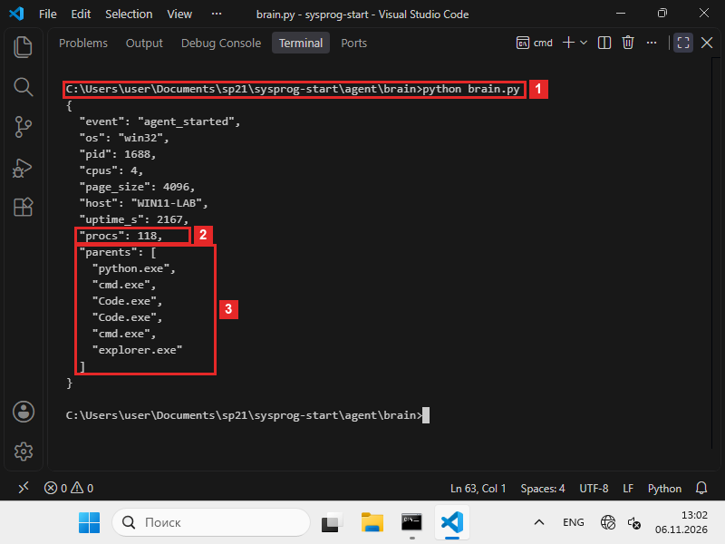
python brain.py. 2 118 процессов. 3 Цепочка родителей: python.exe → cmd.exe → Code.exe → Code.exe → cmd.exe → explorer.exe. Кадр снят Python для ARM64 с ядром, собранным для ARM64: на компьютере с процессором x64 вывод такой же.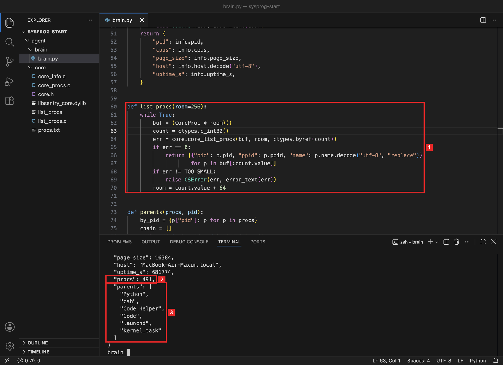
list_procs с повтором. 2 491 процесс. 3 Цепочка родителей: Python → zsh → Code Helper → Code → launchd → kernel_task.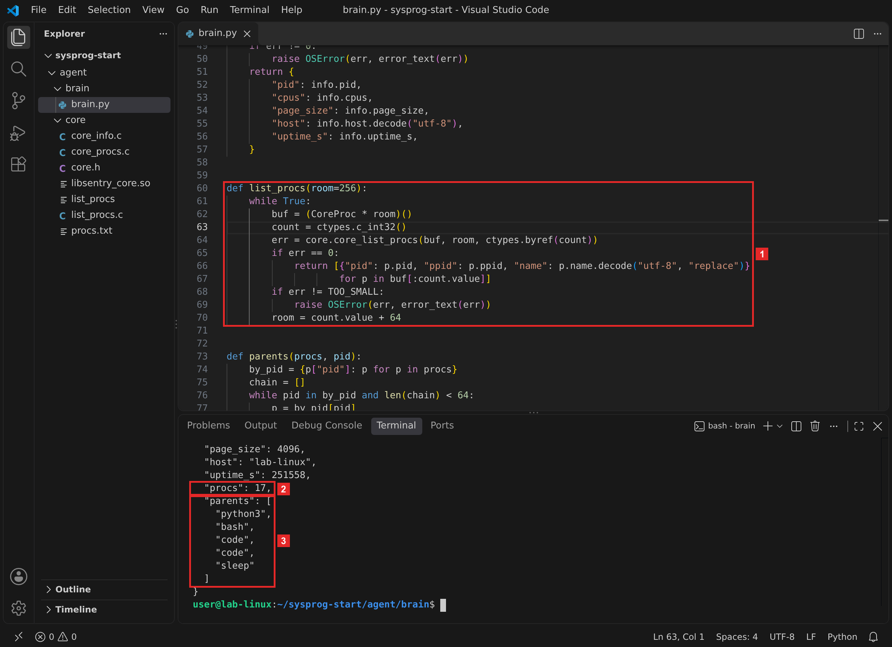
list_procs с повтором. 2 17 процессов. 3 Цепочка родителей: python3 → bash → code → code → sleep.На кадре 118 процессов, и 256 мест хватило с первого вызова. Если процессов больше 256, первый вызов возвращает «мест не хватило», второй — весь список.
Процессов больше 256, поэтому первый вызов вернул «мест не хватило», а второй — весь список.
В контейнере 17 процессов, и 256 мест хватило с первого вызова. На обычном Linux процессов сотни, и сработает повтор.
Цепочка 3 читается снизу вверх как путь запуска: система запустила VS Code, VS Code — оболочку терминала, оболочка — Python.
Цепочка доходит до процесса 0 kernel_task: у него ppid тоже 0, и функция parents останавливается.
Цепочка кончается на процессе 1 sleep: его родитель 0 в списке отсутствует, потому что процесса 0 в /proc нет.
В Windows цепочка часто обрывается раньше: родитель записан номером, а сам родитель мог давно завершиться. На кадре цепочка кончается на explorer.exe: при входе в систему его запускает процесс userinit.exe и сразу завершается, поэтому родителя Проводника в списке нет. Второй cmd.exe в цепочке — окно, из которого запущен VS Code.
Что получилось.Мозг агента получает полный список процессов, сколько бы их ни было, и находит цепочку процессов, которые его запустили.
§8Шаг 7. Отправить в репозиторий
В репозиторий уходят исходники: core.h, core_procs.c, list_procs.c и brain.py. Собранные файлы и procs.txt в него не входят: библиотеку и программу каждый собирает у себя, а список процессов у каждого свой. В agent/core/README.md дописываем строку о core_procs.c и сборке библиотеки из двух файлов.
git add agent/core/core.h agent/core/core_procs.c agent/core/list_procs.c agent/core/README.md agent/brain/brain.py git commit -m "core: core_list_procs — список процессов, brain: цепочка родителей" git push
Перед git add посмотрите git status: если в списке есть list_procs.exelist_procs или procs.txt, допишите их в .gitignore.
Что получилось.Ядро и мозг с новым списком процессов в репозитории. Последняя часть — что проверять в коде, если такую функцию пишет помощник ИИ.
§9Запрос к помощнику ИИ
Функцию списка процессов помощник ИИ пишет быстро, но в ней легко пропустить договор о месте. Запрос в режиме Р1 из главы 0.3:
Вот core.h. Напиши core_list_procs для WindowsmacOSLinux: функция заполняет out не больше чем max строками, в *count пишет число процессов, при нехватке места возвращает код ошибки.
- функция не пишет в
outбольшеmaxстрок — проверкаif (found < max)стоит перед записью; - счётчик растёт и после того, как место кончилось, иначе
countне скажет, сколько мест нужно; - снимок закрывается
CloseHandleна всех путях, в том числе при ошибкеProcess32FirstW;массив дляproc_listallpidsпередаётся размером в байтах, а результат — число номеров;закрывающая скобка имени ищется с конца строки, и папка закрываетсяclosedir; - шаг 5 даёт код 12234 и число нужных мест, шаг 4 — число процессов рядом с системной программой.
Первые три пункта проверяются чтением кода, последний — запуском.
§10Справка: функции и команды
| Что нужно | Windows | macOS | Linux |
|---|---|---|---|
| Все процессы | CreateToolhelp32Snapshot, Process32FirstW, Process32NextW | proc_listallpids | opendir("/proc"), readdir |
| Родитель и имя | поля th32ParentProcessID, szExeFile | proc_pidinfo(…, PROC_PIDT_SHORTBSDINFO, …) | файл /proc/N/stat |
| Длина имени | полное имя файла | 15 символов | 15 символов |
| «Мест не хватило» | 122 ERROR_INSUFFICIENT_BUFFER | 34 ERANGE | |
| Число процессов командой | tasklist /NH | find /c /v "" | ps -A -o pid= | wc -l | |
| Собрать библиотеку | cl /LD core_info.c core_procs.c /Fe:sentry_core.dll | clang -shared -fPIC … core_info.c core_procs.c | gcc -shared -fPIC … core_info.c core_procs.c |
§11Частые вопросы
count — сколько мест нужно. Код нельзя пропускать: иначе агент не узнает, что список неполный.parents ограничивает цепочку 64 шагами.§12Проверьте себя
Какого размера struct core_proc и почему номера в ней по 8 байт?
80 байт: 8 + 8 + 64. Поле на 8 байт вмещает номер процесса любой из трёх систем. Пропусков для выравнивания нет, поэтому раскладка одна на всех системах и совпадает с описанием в Python.
Зачем функция считает процессы и после того, как место в массиве кончилось?
Чтобы записать в count число нужных мест. По нему мозг агента сразу повторяет вызов с массивом нужного размера.
Что вернёт core_list_procs, если передать max = 10, а процессов 17?
Первые 10 строк в out, count = 17 и код 12234.
Почему имя процесса в macOS и Linux бывает обрезано, а в Windows — нет?
Ядра macOS и Linux хранят короткое имя процесса в 16 байтах с нулём, то есть до 15 символов. В Windows из снимка приходит полное имя файла программы.
Почему в Linux закрывающую скобку имени ищут с конца строки?
Имя процесса может содержать пробелы и скобки. Всё между первой «(» и последней «)» — имя, а числа после него читаются уже без ошибок.
Где кончается цепочка родителей и почему?
Когда номера родителя нет в списке (родитель завершился или это процесс 1 в контейнере), когда процесс сам себе родитель (процесс 0) или после 64 шагов.
§13Шпаргалка по главе
struct core_proc: pid, ppid, name[64]80 байтcore_list_procs(out, max, &count)не больше max строк, в count — сколько найденоERROR_INSUFFICIENT_BUFFER34 ERANGEповторить с count + запасCreateToolhelp32Snapshot + Process32NextWproc_listallpids + proc_pidinfo/proc + /proc/N/stattasklistps -Aблизко, но не точноlist_procs() — список словарейparents(procs, os.getpid()) — цепочкаИтог главы
Ядро агента получило функцию core_list_procs: она заполняет массив строками «номер, родитель, имя» по 80 байт и пишет в count, сколько процессов нашла. Windows отдаёт список снимком Tool Help, macOS — номерами из proc_listallpids и сведениями proc_pidinfo, Linux — папками /proc и файлами stat. Наружу функция на всех системах отдаёт одно и то же. Программа list_procs.c показала три вещи. Ядро находит само себя с верным родителем. Число процессов близко к числу системной программы. При 10 местах приходит код 12234 и число нужных мест. Мозг агента повторяет вызов с нужным местом и по номерам родителей строит цепочку от brain.py вверх до процесса, с которого начинается система.
- Кадры и выводы: macOS 26.1, Apple clang 17.0.0, Python 3.12.12; Linux — контейнер Debian 13, gcc 14.4, Python 3.13.5; Windows 11 ARM64 в VirtualBox, MSVC 19.44 (x64), Python 3.14.0 для x64; кадр шага 6 — Python 3.14.0 для ARM64 и ядро, собранное для ARM64; VS Code 1.144.
CreateToolhelp32Snapshot,Process32FirstW,PROCESSENTRY32W— Microsoft Learn, Taking a Snapshot and Viewing Processes; коды 87 и 122 — System Error Codes.proc_listallpids,proc_pidinfo,struct proc_bsdshortinfo,MAXCOMLEN— заголовкиlibproc.h,sys/proc_info.h,sys/param.hиз SDK macOS.- Формат
/proc/PID/statи длина имени 16 байт — man 5 proc_pid_stat. ERANGEиEINVAL— man 3 errno.